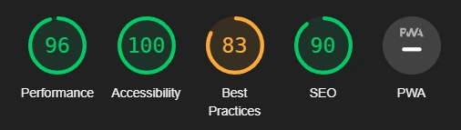
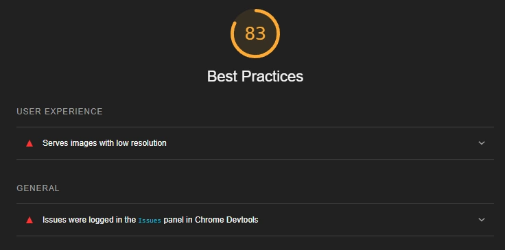
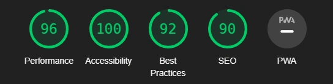
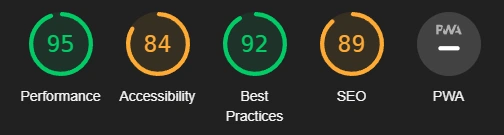

Overskrift
Analyse med Lighthouse
Jeg valgte å kjøre lighthouse for å analysere min side. Jeg valgte å kjøre lighthouse på alle individuelle sidene, og går utifra dette.
Før jeg gjorde en analyse ved hjelp av lighthouse endret jeg filtypen til alle bildene på siden fra png og jpg til webp. Dette fører til at siden er mer optimalisert og laster inn lettere og raskere. Først og fremst tar jeg en analyse av hjemmesiden, så deretter de andre sidene. Siden de fleste sidene bruker hjemmesiden som stampunkt så kan det hende at de påvirkes om jeg forbedrer hjemmesiden.
Når jeg først kjørte lighthouse fikk jeg greie tilbakemeldinger, men også ting man kan forbedre nettsiden med. Performance og SEO er på 90, accessibility er på 100 mens best practicies er på 83. Performance, Accessibility og SEO er ganske gode så de er mer ting jeg kan pirke på senere. Jeg må først fokusere på best practicies.
På best practices så klager lighthouse på at et av bildene har lav oppløsning, dette er da på grunn av det er et midlertidig bilde jeg bruker på analyse knappen. Jeg fikset dette med å hente et bilde fra nettet som kan være relevant for analyse temaet.
Etter jeg fikset på bildet og hjemmesiden så fikk jeg en ny score på lighthouse:
på UU vs SEO siden har jeg helt like resultater som indeksen, alt er over 90 og jeg føler at det er ganske bra. Det samme er for CMS og analyse siden.
Men på "kontakt oss" siden så må noen ting endres ettersom lighthouse tilbakemeldingen er litt dårligere. Her er accessibility og SEO litt dårligere og den klager på at "Form elements do not have associated labels" og "frame or iframe elements do not have a title". Form labels er lett å fikse ved å legge til en label tag til hver "form input". Iframe title er også ganske lett å fikse ved å legge til en title variabel på iframe taggen. I SEO kategorien står det at a tags har ikke en "crawlable link". Dette er fordi jeg bruker a tagg til ikonene men har ikke en link på de, dette kan jeg fikse ved å bytte a taggen med en i tagg. Da vil ikke søkemotoren tro at den skal linke til en nettside og det vil ikke være noe problem.
før
etter
Har ikke så mange flere bilder da sidene har ganske gode resultater på lighthouse. Men på kontakt oss siden så reagerer lighthouse på at en anchor tag er ikke crawlable, dette stusser jeg på da denne anchor taggen er brukt til javascript og ikke skal linke til noen sider.
Heuristisk evaluering av nettsiden
Jeg tar å bruker punktene og går igjennom de fra denne siden.
Visualisering av systemstatus - Jeg går utifra at de mener det å visualisere hvor brukeren er på nettsiden og hvor de da kan gå videre. Dette er ganske tydelig på siden da det er stor overskrift på hver innholdside og tittel på fanen, dette føler jeg er nokk til at brukeren kan forstå hvor de er på nettsiden. En ting jeg kunne ha gjort for å gitt enda mer tydelighet på siden er om navbaren sin knapp hadde en annen bakgrunnsfarge når du var på en side, f.eks på UU vs. Seo siden så hadde UU vs SEO knappen hatt en mørkere farge.
Binding mellom system og realitet - Jeg er litt usikker på hva dette innebærer men tror at de mener tydelighet i tekst og informasjon. Dette vil jeg påstå er riktig på siden da det er innhold som er tydelig og relevant for temaet til siden. Det er også lett å navigere da det ikke er vanskelig ord på knappende.
Brukerkontroll og frihet - Nettsiden har en nødutveisknapp, logoen. Dette kan ikke alltids være tydelig for brukeren om de ikke vet om dette fra før. Brukeren kan også bruke navigasjons baren til å gå til andre sider. Jeg føler at det ikke er så relevant med en nødutveisknapp da det ikke skjer noe farlig om brukeren trykker på feil sted.
Konsistens og standarer - I siden er det ganske konsistens ordbruk. Alle navigasjons knapper er helt like uavhengig vilken side du er på, samt logo, header og footer. Det skal derfor ikke være forvirrende for brukeren å navigere siden.
Fleksibilitet og effektivt bruk - Det jeg kan si om dette punktet angående siden min er at på hjemmesiden så er det knapper under artikelkortende, disse fører rett til siden. Dette kan anses som en snarvei da brukeren ikke trenger å skrolle opp til navigasjonsbaren og finne riktig side.
Estetikk og minimalistisk design - Jeg mener at siden har et ganske greit og ryddig design som ikke forvirrer eller kompliserer innhold/brukervenneligheten til siden. Det er ikke spesielle fargebruk og oppsette er ganske likt på alle sidene, noe som gjør brukeren vant til layouten.
De resterende punktene som ikke er nevnt føler jeg ikke er relevant for siden min, da jeg ikke får svart på de.